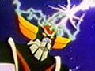

Forums galactiques > Taverne galactique : lieu de discussion informel > S.O.S commandant(e)s
Pages : 1 2
| Wander Black Réputation à la taverne : 48  18/10 ETU 14:21 | Score : 3 Détails Wanda "Wander Black" Al-Kashi riait sous les menaces du pauvre Commandant K.K.A. Ce dernier menaçait les simples ivrognes de la Taverne, et en voyant leur état "zig-zagant", il croyait pouvoir les vaincre...
" Un peu de retenu, Commandant. Notre robot préféré R2D2 demande de l'aide, vous ne pourrez PAS empêcher qui bon lui semble de l'aider. Sincèrement vous faîtes plus rire que peur. Mais je ne vais pas entrer dans votre jeu comme l'ont fait mes camarades... " | ||
| Kuchisaki kahei aka Réputation à la taverne : 5  18/10 ETU 15:04 | Score : 0 Détails KKA avait les paupiéres clauses. Tout cela était tellement prévisible. Quelqun que la socité eu jugé de "normale" aurait fait ses excuses mais kuchisaki n'était pas quelqun de normale. C'était lui qui avait été désigné par le test. Il était celui qui menerait le mieux son peuple.
-Des excuses ? vous viendrez les chercher et vous les mettrez la oû la fantaisie vous l'exige. | ||
| William Réputation à la taverne : 772  18/10 ETU 16:07  | Score : 3 Détails Que vos chaperons, Commandants Archange Nathaniel, Bartiméus Mandrake et Dark Shadows, vous calment d'un cran ou plus, si nécessaire, par toutes les méthodes qu'ils jugent utiles, s'ils veulent que votre survie dépasse celle du césium radioactif dont la fin est inéluctable, ceci dans un pur soucis de survie de votre peuple, qui doit avoir autre chose à faire que de subir les conséquences de vos outrages purement fantaisistes, puisque vous semblez aimer ce terme.
Je le répète, je ne lèverai pas même le petit doigt pour ou contre un Commandant qui n'a aucun respect pour ses pairs, mais j'en connais qui ne se gêneraient pas de passer outre les protections pour aller bouter l'impudence et l'imprudence hors de la galaxie Originelle. | ||
| R2D2 Réputation à la taverne : 2  18/10 ETU 18:39 | Score : 1 Détails je remerci tous les commandants qui me soutienne et qui me viennent en aide . tous ces encouragement me rechauffe les circuits ! je n'ai pas l'intention de me laissé envahir , boire du saké c'est pas bon pour mes boulons
| ||
| ricola Réputation à la taverne : 267  18/10 ETU 23:58 | Score : 0 Détails Merci Commandant Kuchisaki kahei aka de m'avoir accepté a votre table pour partager votre saké.
Je suis heureux de voir que nous avons pu nous mettre d'accord sur votre different avec le Commandant R2D2, et que cette situation va etre reglée par diplomatie et non par les armes. | ||
| gohanssj2 Réputation à la taverne : 15  19/10 ETU 18:02 | Score : 1 Détails Courage R2D2, je ne laisserai personne vous faire de mal. Celui qui vous en fera en bavera.
| ||
| Arya av Vikern Réputation à la taverne : 101  19/10 ETU 18:09 | Score : 1 Détails Ne comptez pas trop sur Gohanssj2, R2D2 ... on va dire qu'il n'est pas au top de sa forme en ce moment ... ^^
| ||
| ocean Réputation à la taverne : 708  19/10 ETU 18:33 | Score : 1 Détails Et en plus le conflit est définitivement réglé
depuis belle lurette Bref, intervention pour ne rien dire | ||
| goldorak Réputation à la taverne : -24  19/10 ETU 21:22 | Score : 0 Détails Il me parait inconcevable que des commandants aussi puissant qu 'ils soient accepte des insultes de la part d'un commandant plein de velosité mais qui reste neanmoins jeune.
Certes il possede déja de nombreux alliés,mais si aujourd'hui nous pouvons insulter quiconque sans peur des consequences.Ou allons nous c'est la porte ouverte à l'anarchie. Commandant Kuchisaki kahei aka je pense que vos paroles ont été plus rapide que vos pensées mais je pense que vous devriez faire des excuses public pour que ces commandants retrouvent leur crédibilité | ||
| William Réputation à la taverne : 772 19/10 ETU 21:27 | Score : 1 Détails Il est sûr que, maintenant que l'affront a été fait, les chaperons sont légèrement décrédibilisés pour leur propension à protéger des Commandants doués d'une asociabilité remarquable. Mais bon, s'ils ne veulent pas protester ou régler l'incident, cela reste leur problème.
|
Pages : 1 2
Forums galactiques > Taverne galactique : lieu de discussion informel > S.O.S commandant(e)s